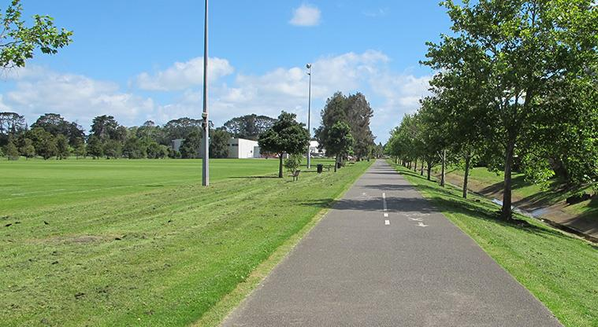

One of Auckland region's 14 Tūpuna Maunga (ancestral mountains). This volcanic cone has extensive views of the surrounding landscape. Access the maunga from Dominion Road. The main entrance gates are open from 7am to 8.30pm in summer, and 7am to 7pm in winter.
Named after Keith Hay an ex-mayor of the Mt Roskill Borough Council, this is one of our largest and most used parks. A good network of accessible paths connect many parts of the community. Access the main car park from Arundel Street and the two smaller car parks from Rainford Street and Noton Road. The main playground, accessible toilets and a basketball half court are in the middle of the park by the Arundel Street entrance.
The park is also home to the: